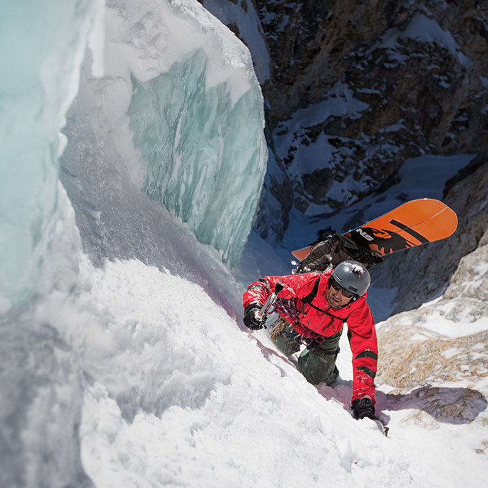

<div id="content">
  <div id="main">
    <div class="container">
      <div class="one_third">
        
      </div>

     <div class="two_third last">
						<h1>Tony Pavlantos</h1>
						<p><a href="https://youtu.be/lIBMt2yAbms">CLICK HERE TO SEE TONY RIDE</a> </p>
						<p><strong>MEET TONY...&nbsp;</strong> Dynamic Agriculture is a method of organic farming originally developed by Rudolf Steiner that employs what proponents describe as "a holistic understanding of agricultural processes". I think some will shove
							deer manure in a bull horn and rub it in mountain lion pee and plant in a corner of their land on a certain moon cycles... Any way I guess there is just a lot to learn...</p>
						<p><strong>TONY'S FAVORITE NS BOARD IS...&nbsp;</strong>The prospector split.... In development the concept of the extended tour rocker camber profile was to create a flat surface area under the foot while in ski mode. This gives you ultimate traction
							on the slickest of skin tracks. In ride mode the Rocker camber shape provides optimal board control from both torsional and lateral flex to initiating edge hold. This board excels in big mountain terrain unlike any other board I have ever rode.
							Glad to have in underfoot 100% of the time we are on snow together. 3 year warranty on a split board! Whaaa!?</p>
					</div>
      <hr>
  </div>
</div>